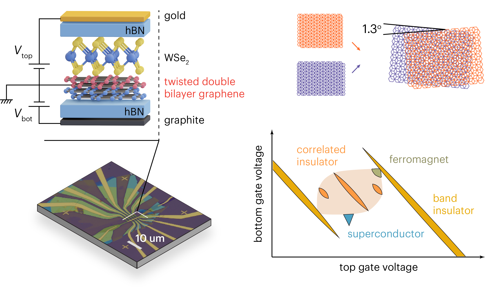
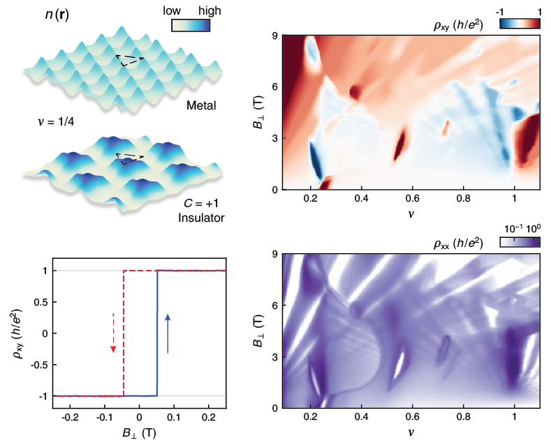
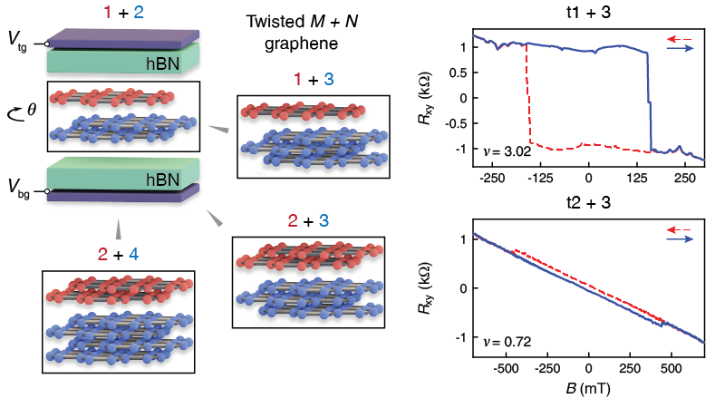
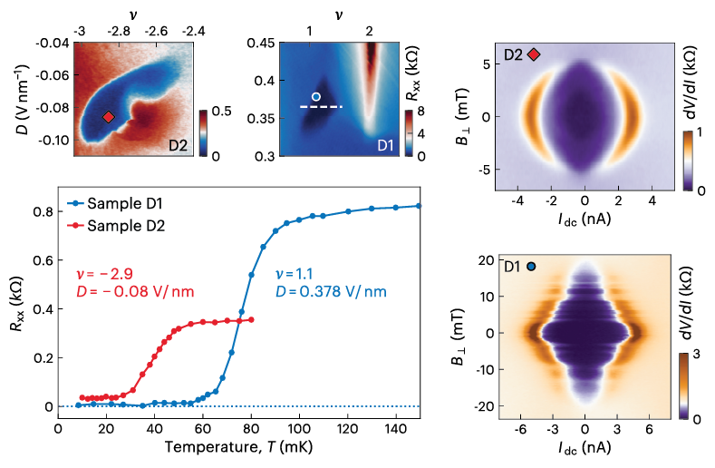

Hi there! I'm a PhD student in the group of Prof. Ali Yazdani at Princeton University. My current research utilizes scanning tunneling spectroscopy and microscopy to study low-dimensional systems.
Previously, I was an undergrad in Prof. Joshua Folk's Quantum Devices Group at UBC. With Prof. Folk, I led experiments on correlated and topological states in 2D materials.
Here, you'll find highlights of my research, updates, and my CV.
The ability to systematically assemble two-dimensional materials creates new opportunities to engineer quantum states and tunable electronic devices. One powerful method is to introduce a twist - a rotational misalignment between neighboring atomic layers. In graphene, this creates a moiré pattern that alters its electronic properties.

In a dilute two-dimensional electron gas, Coulomb interactions can stabilize the formation of a Wigner crystal. Although Wigner crystals are topologically trivial, it has been predicted that electrons in a partially filled band can break continuous translational symmetry and time-reversal symmetry spontaneously to form an anomalous Hall crystal (AHC).
Here, we report the observation of a generalized AHC in twisted bilayer-trilayer graphene (t2+3) whose formation is seeded by the moiré potential. The crystal quadruples the moiré unit-cell area, coinciding with an integer quantum anomalous Hall effect. Recent theories have predicted the generalized AHC to act as a parent state of the fractional quantum anomalous Hall effect, pointing to t2+3 as a promising platform in the search for new correlated and topological phenomena.

Moiré materials host a wealth of correlated and topological states of matter arising from flat electronic bands with nontrivial quantum geometry.
Here, we studied the family of twisted graphene multilayers made of twisted sheets of M- and N-layer Bernal-stacked graphene flakes. Our results show that this family of structures is promising for discovering new topological electronic phenomena, enabled by using the layer number to tune the moiré band and the screening environment.

In a superconductor, electrons form a macroscopic quantum ground state, allowing charge/current to flow without dissipation.
We discovered that proximal coupling to few-layer WSe2 stabilizes superconductivity in twisted double bilayer graphene (t2+2). Our results contribute to the growing body of evidence in graphitic systems, suggesting a correlation—though not an overlap—between electronic states with a tendency toward isospin polarization and those conducive to superconductivity.

| 2025 | Feb. 27 | Now in PRX, our work on Chern insulators at integer and fractional filling in moiré pentalayer graphene! |
|---|---|---|
| Jan. 22 | Now in Nature, our work reporting new topological electronic crystals in twisted graphene! A huge thank you to everyone involved! | |
| 2024 | Dec. 8 | Now in Nature Communications, our work reporting topological flatbands in a family of tN+M graphene! |
| Aug. 19 | Our preprint on "Interplay of electronic crystals with integer and fractional Chern insulators in moiré pentalayer graphene" is now on arXiv! | |
| June 25 | Our preprint on "Generalized anomalous Hall crystals in twisted bilayer-trilayer graphene" is now on arXiv! | |
| May 29 | I graduated from UBC with a Bachelor of Applied Science in Engineering Physics! | |
| May 10 | Our work on "Topological flat bands in a family of multilayer graphene moiré lattices" is now on arXiv! | |
| March 5 | APS March meeting is in Minneapolis, Minnesota, this year! I reported on a possible observation of a Josephson-like effect in an orbital ferromagnet. Our collaborators from UW reported on topological states in tM+N graphene (Abstracts: Here and Here) | |
| 2023 | Sept. 29 | I won first prize in the poster session at SBQMI's International Scientific Advisory Board meeting! (Check it out: Here) |
| Aug. 28 | Exciting news! Our superconductivity work was recently published in Nature Materials :) | |
| May 12 | I attended the CIFAR Quantum Materials spring school in Montréal. I presented a poster on the electronic phases of twisted double bilayer graphene on WSe2. (Check it out: Here) | |
| March 7 | I gave a talk at the APS March meeting in Las Vegas, Nevada, reporting our discovery of superconductivity in twisted double bilayer graphene! (Abstract: Here) |